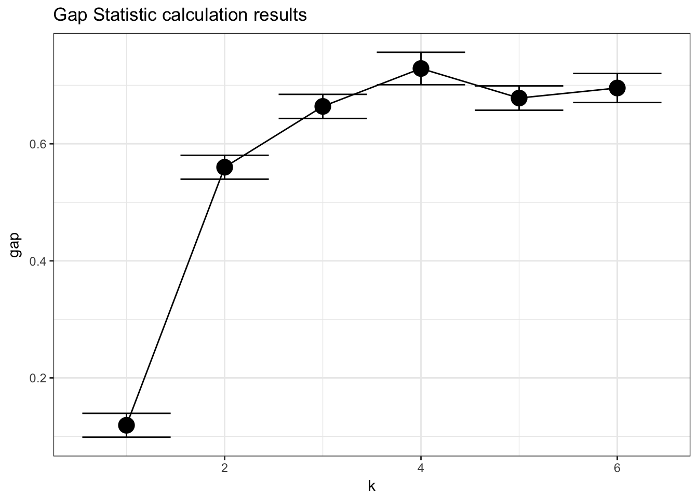
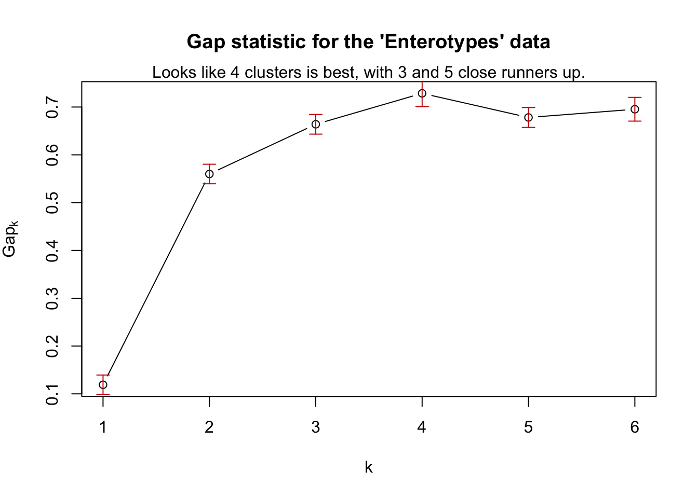

From the clusGap documentation: The clusGap function from the cluster package calculates a goodness of clustering measure, called the “gap” statistic. For each number of clusters k, it compares (W(k)) with E^*[(W(k))] where the latter is defined via bootstrapping, i.e. simulating from a reference distribution.
The following is an example performing the gap statistic on ordination results calculated using phyloseq tools, followed by an example of how a ggplot-based wrapper for this example might be included in the phyloseq package.
In this case, MDS on the Bray-Curtis distance.
library("phyloseq"); packageVersion("phyloseq")## [1] '1.22.3'library("cluster"); packageVersion("cluster")## [1] '2.0.6'library("ggplot2"); packageVersion("ggplot2")## [1] '2.2.1'theme_set(theme_bw())
# Load data
data(enterotype)
# ordination
exord = ordinate(enterotype, method="MDS", distance="jsd")pam1 = function(x, k){list(cluster = pam(x,k, cluster.only=TRUE))}
x = phyloseq:::scores.pcoa(exord, display="sites")
# gskmn = clusGap(x[, 1:2], FUN=kmeans, nstart=20, K.max = 6, B = 500)
gskmn = clusGap(x[, 1:2], FUN=pam1, K.max = 6, B = 50)## Clustering k = 1,2,..., K.max (= 6): .. done
## Bootstrapping, b = 1,2,..., B (= 50) [one "." per sample]:
## .................................................. 50gskmn## Clustering Gap statistic ["clusGap"] from call:
## clusGap(x = x[, 1:2], FUNcluster = pam1, K.max = 6, B = 50)
## B=50 simulated reference sets, k = 1..6; spaceH0="scaledPCA"
## --> Number of clusters (method 'firstSEmax', SE.factor=1): 4
## logW E.logW gap SE.sim
## [1,] 2.995599 3.113476 0.1178770 0.02031872
## [2,] 2.209852 2.771964 0.5621123 0.02358254
## [3,] 1.922188 2.583273 0.6610850 0.02854903
## [4,] 1.685798 2.408618 0.7228201 0.02858372
## [5,] 1.601025 2.276989 0.6759638 0.02019060
## [6,] 1.480640 2.177991 0.6973513 0.02167414Pretty straightforward. In case it is useful to see, this is what a wrapper-function might look like to “add-on” code to phyloseq.
gap_statistic_ordination = function(ord, FUNcluster, type="sites", K.max=6, axes=c(1:2), B=500, verbose=interactive(), ...){
require("cluster")
# If "pam1" was chosen, use this internally defined call to pam
if(FUNcluster == "pam1"){
FUNcluster = function(x,k) list(cluster = pam(x, k, cluster.only=TRUE))
}
# Use the scores function to get the ordination coordinates
x = phyloseq:::scores.pcoa(ord, display=type)
# If axes not explicitly defined (NULL), then use all of them
if(is.null(axes)){axes = 1:ncol(x)}
# Finally, perform, and return, the gap statistic calculation using cluster::clusGap
clusGap(x[, axes], FUN=FUNcluster, K.max=K.max, B=B, verbose=verbose, ...)
}Define a plot method for results
plot_clusgap = function(clusgap, title="Gap Statistic calculation results"){
require("ggplot2")
gstab = data.frame(clusgap$Tab, k=1:nrow(clusgap$Tab))
p = ggplot(gstab, aes(k, gap)) + geom_line() + geom_point(size=5)
p = p + geom_errorbar(aes(ymax=gap+SE.sim, ymin=gap-SE.sim))
p = p + ggtitle(title)
return(p)
}Now try out this function. Should work on ordination classes recognized by scores function, and provide a ggplot graphic instead of a base graphic. (Special Note: the phyloseq-defined scores extensions are not exported as regular functions to avoid conflict, so phyloseq-defined scores extensions can only be accessed with the phyloseq::: namespace prefix in front.)
gs = gap_statistic_ordination(exord, "pam1", B=50, verbose=FALSE)
print(gs, method="Tibs2001SEmax")## Clustering Gap statistic ["clusGap"] from call:
## clusGap(x = x[, axes], FUNcluster = FUNcluster, K.max = K.max, B = B, verbose = verbose)
## B=50 simulated reference sets, k = 1..6; spaceH0="scaledPCA"
## --> Number of clusters (method 'Tibs2001SEmax', SE.factor=1): 4
## logW E.logW gap SE.sim
## [1,] 2.995599 3.114646 0.1190475 0.02035141
## [2,] 2.209852 2.769811 0.5599590 0.02040883
## [3,] 1.922188 2.586105 0.6639169 0.02058187
## [4,] 1.685798 2.414474 0.7286765 0.02770392
## [5,] 1.601025 2.279208 0.6781836 0.02079129
## [6,] 1.480640 2.176011 0.6953714 0.02481494plot_clusgap(gs)
Base graphics plotting, for comparison.
plot(gs, main = "Gap statistic for the 'Enterotypes' data")
mtext("Looks like 4 clusters is best, with 3 and 5 close runners up.") 